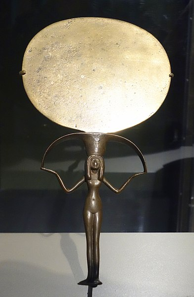
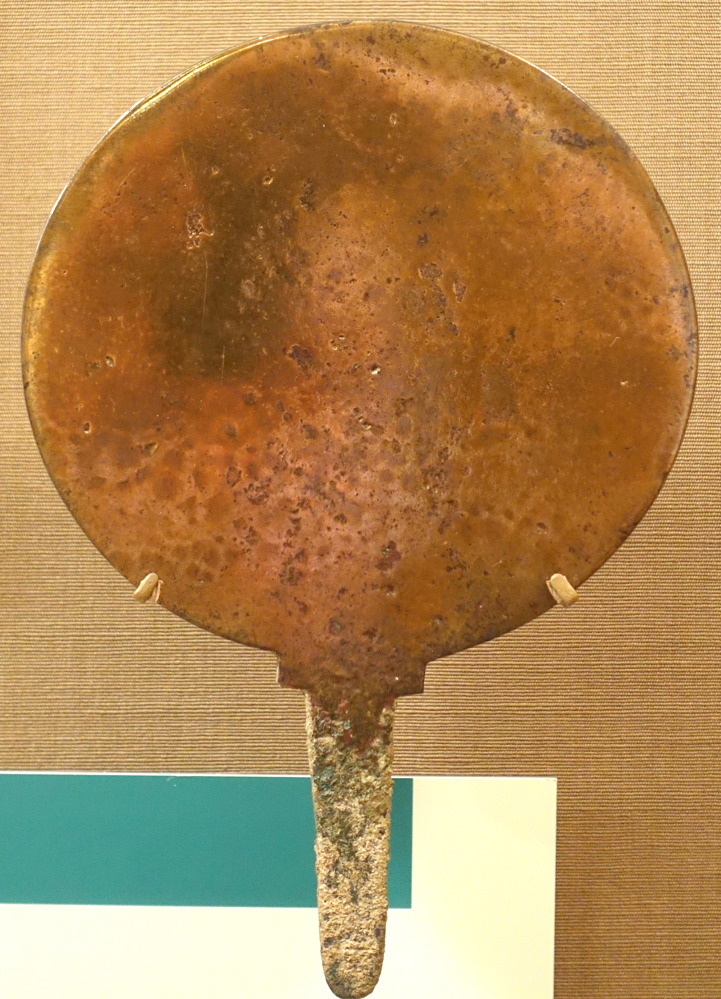

גִּלָּיוֹן gillāyōn – mirror, stone tablet (?)
Semantic Fields:
Utensils Writing
Author(s):
Archibald L.H.M. van Wieringen *
First published: 2025-02-05
Citation: Archibald L.H.M. van Wieringen, גִּלָּיוֹן gillāyōn – mirror, stone tablet (?),
Semantics of Ancient Hebrew Database (sahd-online.com), 2025
(WORK IN PROGRESS)
Introduction
Grammatical type: n.m.
Occurrences: 2x HB (0/2/0); 0x Sir; 0x Qum; 0x Inscr. (Total: 2).
- Nebiim: Isa 3:23; 8:1.
B.1 BHS suggested on the basis of Akkadian gulīnu, ‘clothes’, that in Isa 3:23 *וְהַגְּלִיֹנִים should be read instead of MT וְהַגִּלְיֹנִים.
B.2 There have also been emendation proposals for the reading גִּלָּיוֹן גָּדוֹל in Isa 8:1. It has been suggested that in Isa 8:1 LXX καινοῦ is a corrupted form of κλήρου, ‘????’, ‘piece of wood’, and that the Hebrew text of Isa 8:1 should read *גִּלְיוֺן גּוֺרָל, ‘????’, instead of גִּלָּיוֺן גָּדוֺל (BHS; see also HAL, 185 *גִּלָּיוֺן גּוֺרָל, ‘eine Allmende-Blatt’). However, as Williamson rightly observes, ‘1QIsaa has exactly the same as MT, and all the versions agree in rendering the second word as ‘‘big, large’’ ’ (Williamson 2018:193).
1. Root and Comparative Material
A.1 The nominal formation of גִּלָּיוֹן is not unusual in Hebrew and parallels בִּזָּיוֹן, דִּמְיוֹן (cstr. of *דִּמָּיוֹן?), הִגָּיוֹן, הֵרָיוֹן, חִזָּיוֹן, כִּלָּיוֹן, נִקָּיוֹן, פִּדְיוֺן (cstr. of *פִּדָּיוֺן?), and שִׁגָּיוֹן; cf. עֶלְיוֺן.1 The third radical ה of the root of these nouns is replaced by י (yod) followed by the noun formation ending וֺן- according to the pattern qatalān/qatalōn.2 This background strongly suggests that the word גִּלָּיוֹן should be derived from √גלה, ‘to uncover, reveal’,3 not from √גלל, ‘to roll’. This thwarts the interpretation of גִּלָּיוֹן as a byform of מְגִלָּה, ‘scroll’ (גִּלָּיוֹן V in DCHR ii:406; cf. part of the Ancient Versions), or as ‘(cylinder) seal’ (גִּלָּיוֹן IV in DCHR ii:406; cf. Norin 2006). The latter proposal is also objectionable on contextual grounds.
A.2 √glw/y is attested in almost all Semitic languages (Cohen et al., DRS, fasc. 3:120-22; Leslau, CDG, 192-93). In Classical Arabic, one of the meanings of the verb ǧlw is ‘to polish’ (a sword or a mirror; cf. Lane, 447). In Modern South Arabic the verb √gly also means ‘to polish’ (Johnstone, ML, 119). In Phoenician, the verb gly means ‘to uncover, reveal’ (DNWSI, 223). In the Aramaic of Targum Onkelos, the verb גלי means ‘to reveal’ (Cook 2008:45).
A.3 Postbiblical Hebrew and Jewish Aramaic. Although the attestations of גִּלָּיוֹן in the rabbinic sources seem to derive from Isa 8:1, גִּלָּיוֹן appears to be used as terminus technicus for the blank margin of a manuscript (WTM i:334; Jastrow, DTT, vol. 1, 249; Krupnik & Silbermann 1927, 173, הריות החָלק הבלתי כתוב המקיץף את הכתוב בדף, ‘margin of scrolls’). mYadayim 3:4: גִּלָּיוֹן שֶׁבַּסֵּפֶר, שֶׁמִּלְּמַעְלָן וְשֶׁמִּלְּמַטָּן שֶׁבַּתְּחִלָּה וְשֶׁבַּסּוֹף , ‘the margin on a scroll which is above or below or at the beginning or at the end’; also bShabbat 116a (passim), 116b (2x); tYadayim 2:11 (הגליון שבתחלת הספר, ‘at the beginning of the scroll’); tYad 2:13 (הגליונים וספרי המינים); bMenaḥot 30a (שיעור גליון מלמטה טפח מלמעלה, ‘the width of the margin below’); tShabbat 13:5 (הגיליונים וסיפרי מינים; Neusner: ‘The books of the Evangelists and the books of the minim’). There is insufficient reason to assume a satyrical allusion to the Christian εὐαγγέλιον in bShabbat 116, tYadayim 2:13; tShabbat 13:5 (G. Friedrich, ThWNT, 2:723-24; Herford 1903, 155), as suggested by Jastrow, DTT, vol. 1, 27, for the expression of גִּלָּיוֹן with אָוֶן/אָוֶון as a cacophemistic adoption of the Greek word ἐυαγγέλιον. In bʿAvodah Zarah 18a גליון designates the unwritten parchment of a scroll since it is contrasted to the lettering that got away unharmed. Gen. R. XIX.6 seems to understand גִּלָּיוֹן in Isa 3:23 as some kind of garment for women, possibly under the influence of LXX. In Modern Hebrew , the noun גִּלָּיוֺן means ‘sheet, tablet, copy of newspaper’ (Ben-Yehuda & Weinstein 1975:38). In Yiddish, the noun gilójen means ‘Bücherrand, Marginalien’ (Landmann 1988:166).
A.4 Syriac. The verb ܓܠܐ/ ܓܠܝ (glʾ/gly) means ‘to uncover, reveal’. Among the nouns derived from this verb are ܓܠܝܐ (gelyā), ‘manifestation, declaring’, ܓܠܝܘܬܐ (gelyūṯā), ‘uncovering, revealing’, and ܓܠܝܢܐ (gelyānā), ‘revelation, appearance, manifestation’, especially used for the Apocalypse, with ܥܐܕܐ ܕܓܠܝܢܐ (ʿīḏā dgelyānā) as a designation for ‘the Feast of Transfiguration’.4 For ܓܠܝܘ݁ܢܐ (gellāyūnā) in Isa 8:1, see Ancient Versions A.3. In modern Suryoyo, the adjective ܓܠܝܐ (galyā) means ‘uncovered, open, clear’ (dbeth-Dayroyo 1986, 25).
2. Formal Characteristics
A.1 גִּלָּיוֹן is a qatalān form with secondary doubling of the second radical in the singular absolute form (see Isa 8:1).8 The plural גִּלְיֹנִים in Isa 3:23 is based on the original form without doubling (BL 498d, 537f), as in cstr. הֶגְיוֺן of הִגָּיוֺן, cstr. חֶזְיוֺן and pl. חֶזְיֹנוֺת of חִזָּיוֺן, cstr. נִקְיוֺן/נִקְיֺן of נִקָּיוֺן, and pl. שִׁגְיֺנוֺן of שִׁגָּיוֺן (cf. also the pl. עֶלְיוֺנֺת of עֶלְיוֺן, and the cstr. פִּדְיוֺן/פִּדְיֺן of פִּדְיוֺן/*פִּדָּיוֺן).
3. Syntagmatics
A.1 In Isa 3:23, גִּלְיֹנִים is part of an enumeration in the verses 18-23 that functions as object of the verbal form יָסִיר in 3:18. In Isa 8:1, ִגִּלָּיוֹן is modified by the adjective גָּדוֹל and the noun is the object of the imperative קַח. The suffix 3 sg. masc. in עָלָיו refers back to ִגִּלָּיוֹן and indicates that something must be written on it (כתב).
4. Ancient Versions
a. Septuagint (LXX) and other Greek versions:9
- διαφανῆ (from διαφανής) λακωνικὰ, ‘translucent Laconian dresses’:10 Isa 3:23LXX? (see A.1);
- διφθέρωμα, ‘hide’:11 Isa 8:1θʹ;
- κεφαλίς, ‘little head’ (dim. of κεφαλή), here probably ‘scroll’:12 Isa 8:1αʹ;
- τεῦχος, ‘implement’, here probably ‘roll of writing material’:13 Isa 8:1σʹ;
- τόμος, ‘roll’:14 Isa 8:1LXX? (see A.2).
b. Peshitta (Pesh):
- ܓܠܝܘܢܐ (gellāyūnā) (see A.3): Isa 8:1;
- ܢܚܬܐ (naḥtā), ‘garment’,15 ‘long outer garment reaching to the feet’:16 Isa 3:23.
c. Targumim (TgJ):
d. Vulgate (Vg):
A.1 Usually, τὰ διαφανῆ λακωνικὰ, ‘the translucent Laconian dresses’, in LXX Isa 3:22 is seen as the rendering of MT 3:23 הַגִּלְיֹנִים (e.g., Camilo dos Santos, EHIH, 36; Muraoka, HIS, 34). However, the LXX’s rendering of these verses is very confused and the equation is by no means certain (Van der Meer 2008). If in LXX τὰ διαφανῆ λακωνικὰ is indeed the rendering of MT הַגִּלְיֹנִים, it is probably due to derivation from גלה, ‘to uncover, reveal’: ‘transparent garments, as it were making the body naked’ (Gesenius 1857:171).
A.2 In Isa 8:1 the LXX paraphrases τόμον καινοῦ μεγάλου, ‘a scroll of a new large (book)’, but τόμον καινοῦ μεγάλου could be a corruption of τόμον καινὸν μεγάλον, ‘a new large scroll’. In 1 Esd 6:22 τόμος seems to be the rendering of Aram. מְגִלָּה, ‘scroll’, in Ezra 6:2 (see מְגִלָּה: 4. Ancient Versions). Probably all the Greek translators interpreted גִּלָּיוֹן as a derivative of גלל, ‘to roll’, just like מְגִלָּה: αʹ opts for κεφαλίς, here probably ‘scroll’, σʹ for τεῦχος, here apparently also ‘scroll’, while διφθέρωμα, ‘hide’, in θʹ is probably an attempt to explain that it was an unrolled parchment scroll. See also Vg Isa 8:1.
A.3 In Isa 3:23 Pesh guesses ܢܚ̈ܬܝܗܝܢ, ‘their long mantles’. In Isa 8:1 Pesh simply transcribes the Hebrew into Syriac: ܓܠܝܘܢܐ. The Syriac dictionaries (Payne Smith, CSD3, 71: ‘writing-tablet’; Costaz, DSF, 48: ‘roll (volume)’; SLB, 236: ‘scroll’) fill in the presumed meaning of the Hebrew word and for that reason are not really helpful.
A.4 In Isa 3:23 TgJ has the rendering מחזיתא (var. מַחְזִיאתָא), ‘mirrors’. The rendering לוּחַ רַב, ‘a large tablet (or plank)’, in Isa 8:1 is possibly due to harmonisation with Hab 2:2.
5. Lexical/Semantic Fields
A.1 Isa 3:18-23 contains a list of all kinds of women’s beauty products (jewellery, clothing and trinkets), of which the גִּלְיֹנִים are one of them. Enumerated are עֶכֶס, ‘foot ring’, שְׁבִיס, ‘forehead jewellery, necklace’, שַׂהֲרֹן, ‘little moon’, נְטִיפָה, ‘earring’, שֵׁרָה, ‘bracelet’, רְעָלָה, ‘veil’, פְּאֵר, ‘hat’, צְעָדָה, ‘ancle chainlet’, קִשֻּׁר, ‘belt, waistband’, בֵּית הַנֶּפֶשׁ, ‘amulet’, לַחַשׁ, ‘charm’, טַבַּעַת, ‘finger ring’, נֶזֶם אַף, ‘nose ring’, מַחֲלָצָה, ‘robe’, מַעֲטָפָה, ‘cloak’, מִטְפַּחַת, ‘wrap’, חָרִיט, ‘purse’, סָדִין, ‘linen undershirt’, צָנִיף, ‘headband’, and רָדִיד, ‘overcoat’. It seems that many of the elements in this enumeration form couples or triplets, e.g., רְעָלָה, ‘veil’, and פְּאֵר, ‘hat’, הַנֶּפֶשׁ, ‘amulet’, and לַחַשׁ, ‘charm’, טַבַּעַת, ‘finger ring’, and נֶזֶם אַף, ‘nose ring’, and מַחֲלָצָה, ‘robe’, מַעֲטָפָה, ‘cloak’, and מִטְפַּחַת, ‘wrap’. If this is correct, then גִּלָּיוֹן might form a couple with חָרִיט, ‘purse’. This implies that it is probably not a garment, but a portable trinket.
A.2 In Isa 8:1, גִּלָּיוֹן is part of the semantic field of ‘writing’, expressed in the words כתב, ‘to write’, and חֶרֶט אֱנוֹשׁ, ‘a normal stylus’ (→ חֶרֶט).
6. Exegesis
6.1 Textual Evidence
A.1 In Isa 8:1 the word גִּלָּיוֹן occurs in the singular, where it is construed with the adjective גָּדוֹל, ‘large’. Isaiah has to write the text לְמַהֵר שָׁלָל חָשׁ בַּז, ‘Belonging to Maher-šalal-ḥaš-baz’, on this large object. He must write the text with a חֶרֶט אֱנוֹשׁ, ‘a normal stylus’ (→ חֶרֶט), as opposed to the finer jeweller’s engraving tool that was used to write similar indications of ownership in tiny letters on seals. People used such a stylus to engrave markings of ownership on household utensils, weapons and jars. The use of an engraving stylus excludes the possibility that the גִּלָּיוֹן was a single sheet of papyrus (pace Galling 1933; 1971; Hyatt 1943:74). The text had to be easily legible to all passers-by (cf. Hab 2:2). A few verses later, Maher-šalal-ḥaš-baz appears to be the name of Isaiah’s son. The meaning of the name is explained as ‘Soon-spoil, Quickly-loot’ (cf. Ges18, 640) because soon the wealth of Damascus and the spoil of Samaria will be brought before the king of Assyria (Isa 8:3-4). In 8:6-8 it is announced that Judah cannot hope to escape the same fate (cf. Waschke 2007:121). However, this explanation had to wait until the child was born and so people passing Isaiah’s גִּלָּיוֹן were kept in the dark for nine months.
A.2 In past scholarship the meaning of גִּלָּיוֹן in Isa 8:1 has been assumed to be ‘board’, ‘tablet’, or the like (BDB, 163; KBL, 184; HALOT, 193; Ges18, 218; DCHR ii:406 גִּלָּיוֹן I; cf. TgJ). This still remains a possibility. However, it is difficult to understand then that the word → לוּחַ, ‘board, plank’, was not chosen, as it was in Hab 2:2. Therefore, an alternative solution is presented here.
A.3 The noun גִּלָּיוֹן should be derived from √גלה, ‘to uncover, reveal’, not from √גלל, ‘to roll’; see Root and Comparative Material A.1 (cf. also Leopold 1910:68 ‘tabula polita et rasa, specula ex metallo polito confecta’). The ‘uncovering’ of a stone or metal object was a term for polishing its surface in order to remove the layer of oxydation (cf. De Moor 1964). Sir 12:11 LXX reads: καὶ ἔσῃ αὐτῷ ὡς ἐκμεμαχὼς ἔσοπτρον, ‘and you shall be to him as one who wipes a mirror’ (NETS). Apparently, this translation rests on a different Hebrew original than ms A. It describes the polishing of a mirror to remove the rust (original Hebrew probably כמגלה ראי, → רְאִי). This tallies with several Ancient Versions which understood גִּלָּיוֹן in Isa 3:23 as ‘mirror’. Mirrors were usually made of bronze, sometimes provided with a patina of silver or gold to enhance reflection (Derriks 2001). Inscribing names on mirrors was not uncommon (see, e.g., Bird 1986). Standing rectangular mirrors were also known (see, e.g., BNP s.v. ‘Mirror’). The reason why Isaiah had to write this ominous name on a reflecting surface was obviously to warn passers-by who saw their own reflection in the mirror that they themselves would soon become spoil of war.
A.4 The writing thus serves various objectives, appropriate to the text-internal communication (cf. Van Wieringen 2006). The divine message is exposed to the general public, in order to recognise themselves in the reflection of the mirror and the prophetic words written on it – and via the general public to the text-internal reader as well. To reach the general public, the message had to be incised in an unusually large tablet or mirror. Normally writing tablets and mirrors were smaller (→ מַרְאָה and רְאִי). In the second place the inscription in durable stone or metal makes the prophetic words lasting. In case of vandalism of angry people the words remained intact. The object had to prove the reliability of Isaiah's announcement later on (compare Isa 8:16, 17-18). The durability and reliability of the prophetic words on Isaiah’s inscription are confirmed by two reliable witnesses (Isa 8:2).
A.5 The plural גִּלְיֹנִים is attested in Isa 3:23. There is insufficient reason to regard this form as deriving from a different word than גִּלָּיוֹן in Isa 8:1 (against Ges18, 218). Although the following words are usually explained as garments, the immediately preceding חֲרִיטִים means ‘purses’. Therefore, there is no reason why mirrors would not be mentioned as objects used predominantly by rich ladies. Ancient pictorial and archaeological evidence also suggests that mirrors were popular among women (see 6.2 below). There is insufficient reason to think of exotic papyrus garments; pace Hönig 1957:118, and CHALOT, 61, who suggest that the meaning of something made of papyrus might be possible for both Isa 3:23, namely garments of papyrus, and 8:1, namely a writing surface of papyrus.
6.2 Pictorial Material and Archaeology
A.1 See the following literature for illustrations and discussion: ANEP 21, #71; 23, #76, #78; 68, #216; 207, #631, #632; Winter 1983, Pl. 1-10; Albenda 1985; Anlen & Padiou 1989; Bonatz 2000:82-85; Derriks 2001. The evidence suggests that hand mirrors were used by women.
A.2 Mirrors are attested as early as the 20th century BCE in the Egyptian Tale of Sinuhe (COS i:82). On her sarcophagus (ca. 2000 BCE), Princess Kawit is depicted with a mirror in her left hand; see https://upload.wikimedia.org/ (= ANEP 23, #76).
For Mesopotamia, see Pappi 2011. Mirrors have been found in graves of women since the Ǧemdet Naṣr period (Salonen, Hausgeräte, Bd. 1, 110), were extremely popular among women in Mesopotamia (see, e.g., Nemet-Nejat 1993) and Egypt (Munro 1969). Mirrors occur in dowry lists, e.g., 204 such items in the dowry of an Egyptian princess (EA 14:II.65-66, 75-79; for EA 14 as a dowry list, see Kühne 1973, 70-71).
[ More Discussion will be added later. ]

Mirror from Egypt, silver and copper alloy, ca. 1479-1390 BCE, https://commons.wikimedia.org/

Bronze mirror from Khorsabad, Assyria, 900-612 BCE, https://commons.wikimedia.org/
7. Conclusion
A.1 Already in some of the oldest translations (TgJ, Vg), גִּלָּיוֹן in Isa 3:23 is interpreted as ‘mirror’. This interpretation is defensible in view of the noun’s derivation from the verb גלה/gly, which means ‘to uncover’ or ‘to reveal’ in several Northwest Semitic languages; see Root and Comparative Material
A.2 The common interpretation of גִּלָּיוֹן in Isa 8:1 as ‘tablet’ or ‘writing board’ rests on a precarious basis. Only one of the ancient versions supports it (TgJ). Furthermore, it is unclear why the usual designation of such an object (לוּחַ) would have been avoided here. For these reasons, this view should be considered a possible but less likely option.
A.3 A better solution is to accept the meaning ‘mirror’ also for גִּלָּיוֹן in Isa 8:1. Following this interpretation of Isa 8:1, the goal of Isaiah’s writing on a mirror was apparently to warn passers-by who saw their reflection in it and to make them realise that they were the target of the inscription.
Bibliography
For the abbreviations see the List of Abbreviations.
Pauline Albenda, ‘Mirrors in the Ancient Near East’, Source: Notes in the History of Art, 4/2-3, 2-9.
Léon Anlen, Roger Padiou, Les miroirs de bronze anciens: Symbolisme et tradition, Paris: Guy Trédaniel.
Ehud Ben Yehuda, David Weinstein, Pocket English-Hebrew, Hebrew-English Dictionary, New York, NY: Washington Square Press, 197518 (19611).
Julian G. Bird, ‘An Inscribed Mirror in Athens’, JEA 72:187-89.
Dominik Bonatz, Das syro-hethitische Grabdenkmal: Untersuchungen zur Entstehung einer neuen Bildgattung in der Eisenzeit im nordsyrisch-südostanatolischen Raum, Mainz: Philipp von Zabern.
Edward M. Cook, A Glossary of Targum Onkelos according to Alexander Sperber’s edition (SAIS, 6), Leiden: Brill.
Simon Atto dbeth-Dayroyo, Nederlands Suryoyo woordenboek, Enschede: Atto.
Johannes C. de Moor, ‘Ugaritic ṯkḥ and South Arabian mṯkḥ’, VT 14:371-72.
Claire Derriks, ‘Mirrors’, in: Donald B. Redford (ed.), The Oxford Encyclopedia of Ancient Egypt, vol. 2, Oxford: Oxford University Press, 419-22.
Kurt Galling, ‘Ein Stück judäischen Bodenrechts in Jesaja 8’, ZDPV 56:209-18.
Kurt Galling, ‘Tafel, Buch und Blatt’, in: Hans Goedicke (ed.), Near Eastern Studies in Honor of William Foxwell Albright, Baltimore: John Hopkins Press, 207-23.
Gesenius’s Hebrew and Chaldee Lexicon to the Old Testament Scriptures, translated, with additions and corrections from the author’s Thesaurus and Other Works, by Samuel Prideaux Tregelles, London: Bagster.
Robert Travers Herford, Christianity in Talmud and Midrash, London: Williams & Norgate (reprint 2010).
Hans Wolfram Hönig, Die Bekleidung des Hebräers: Eine biblisch-archäologische Untersuchung, Zürich: Brunner Bodmer.
James Philip Hyatt, ‘The Writing of an Old Testament Book’, BA 6:71-80.
Baruch Krupnik, Abraham M. Silbermann, A Dictionary of the Talmud, the Midrash and the Targum, Hebrew / English / German, London: Shapiro, Vallentine & Co.
Cord Kühne, Die Chronologie der internationalen Korrespondenz von El-Amarna (AOAT, 17), Neukirchen-Vluyn: Neukirchener.
Salcia Landmann, Jiddisch: Das Abenteuer einer Sprache (Ullstein Materialien, Ullstein Buch 35240), Frankfurt: Ullstein.
Ernst Friedrich Leopold, Lexicon Hebraicum et Chaldaicum in libros Veteris Testamenti ordine etymologico compositum in usum scholarum, Lipsiae: Sumptibus succ. Ottonis Holtze.
Robert Lowth, Isaiah, Boston, MA: Buckingham.
Peter Munro, ‘Eine Gruppe spätägyptischer Bronzespiegel’, ZÄS 95:92-109 (Pl. II-IX).
Karen Rhea Nemet-Nejat, ‘A Mirror Belonging to the Lady-of-Uruk’, in: Mark E. Cohen et al. (eds), The Tablet and the Scroll: Near Eastern Studies in Honor of William W. Hallo, Bethesda, MD: CDL, 163-69.
Stig Norin, ‘Was ist ein Gillajon?’, VT 56:363-69.
Cinzia Pappi, ‘Spiegel (mirror)’, RLA 12:645-46.
Johann Leonhard Reckenberger, Liber radicum sive lexicon hebraicum: In quo formae vocabulorum codicis hebraei grammaticae, Ienae: Impensis B. Io. Rudolphi Croekeri Vidvae.
Daniel Sivan, A Grammar of the Ugaritic Language (HdO, 1/28), Leiden: Brill.
Michaël N. van der Meer, ‘Trendy Translations in the Septuagint of Isaiah: A Study of the Vocabulary of the Greek Isaiah 3, 18-23 in the Light of Contemporary Sources’, in: M. Karrer, W. Kraus (eds), Die Septuaginta – Texte, Kontexte, Lebenswelten: Internationale Fachtagung veranstaltet von Septuaginta Deutsch (LXX.D), Wuppertal 20.-23. Juli 2006 (WUNT, 219), Tübingen: Mohr-Siebeck, 581-96.
Archibald L.H.M. van Wieringen, The Reader-Oriented Unity of the Book Isaiah (ACEBT.SS, 6), Vught: Skandalon.
Ernst-Joachim Waschke, ‘Die Tafel des Propheten: Überlegungen zu Jes 8,1- 7’, in: Rüdiger Lux, Ernst-Joachim Waschke (eds), Die unwiderstehliche Wahrheit: Studien zur alttestamentlichen Prophetie. Festschrift für Arndt Meinhold (Arbeiten zur Bibel und ihrer Geschichte, 23), Leipzig: Evangelische Verlagsanstalt, 115-128.
Hugh G.M. Williamson, A Critical and Exegetical Commentary on Isaiah 1-27, vol. 2: Isaiah 6-12 (ICC), London: T&T Clark.
Urs Winter, Frau und Göttin: Exegetische und ikonographische Studien zum weiblichen Gottesbild im alten Israel und in dessen Umwelt (OBO, 53), Freiburg (Schweiz): Universitätsverlag.
Notes
Many thanks are due to Paul Sanders (Protestantse Theologische Universiteit, Utrecht) for his suggestions.
Many thanks are due to Paul Sanders (Protestantse Theologische Universiteit, Utrecht) for his suggestions.
-
See esp. BL 498; Meyer, HG, 41.1.a; Lowth 1815:233; cf. Reckenberger 1749:227: ‘nomen ex coniugatione gravi formatum’. ↩
-
As in Ugaritic: Gordon, UT, 8.58; Sivan 1997:73-74; Tropper, UG, 271-73. ↩
-
See already Gesenius, TPC i:285; BDB, 163; also KBL, 184; HALOT, 193; Ges18, 218. See also DCHR ii:406 גִּלָּיוֹן I (‘tablet’), II (‘mirror)’, and III (‘garment’). ↩
-
Payne Smith, CSD, pp. 69-71; Costaz, DSF3, 47-48; Sokoloff, SLB, 235-37. ↩
-
BL, 498 cθ; cf. Meyer, HG, 36-37. ↩
-
For Isa 8:1 in αʹσʹθʹ, see Field II:445. ↩
-
LSJ, 417; GELS, 162. ↩
-
LSJ, 438. ↩
-
LSJ, 945; GELS, 396. ↩
-
LSJ, 1784. ↩
-
LSJ, 1804, GELS, 683. ↩
-
Costaz, DSF, 202; Sokoloff, SLB, 910. ↩
-
Payne Smith, CSD, 336. ↩
-
Jastrow, DTT, ???; WTM II, ???; Dalman, ANHT, ???; Sokoloff, DJPA, 279; DJBA, 619). ↩
-
Jastrow, DTT, 758 [ook: show]; WTM III, ???; Dalman, ANHT, ???. ↩
-
Lewis & Short, LD, 1057; OLD, 1024. ↩
-
Lewis & Short, LD, 1739; OLD, 1802. ↩